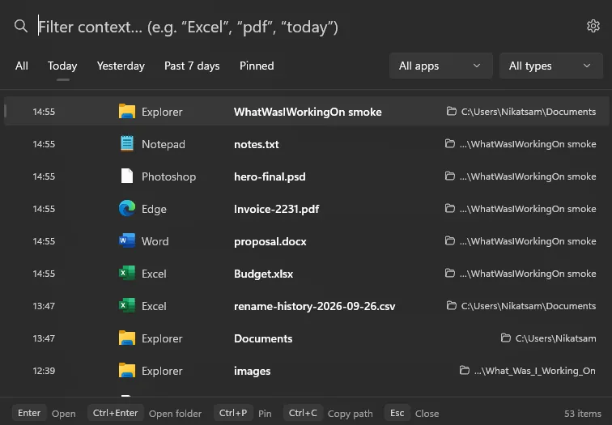
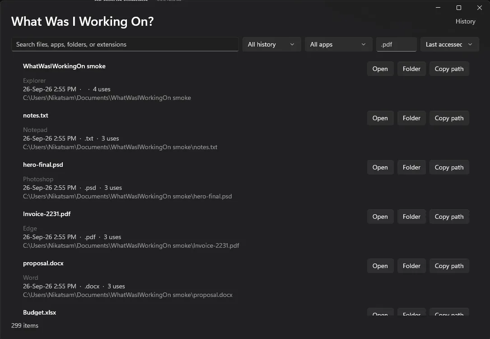
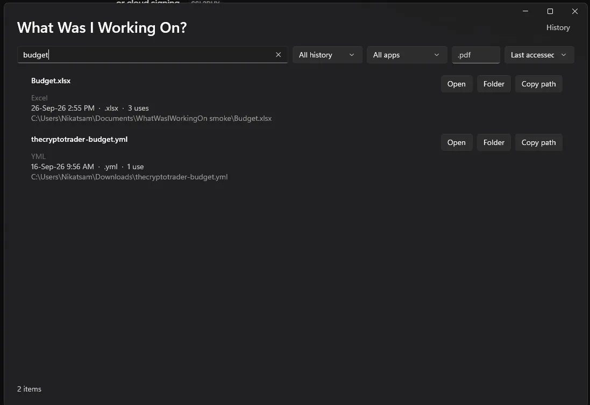
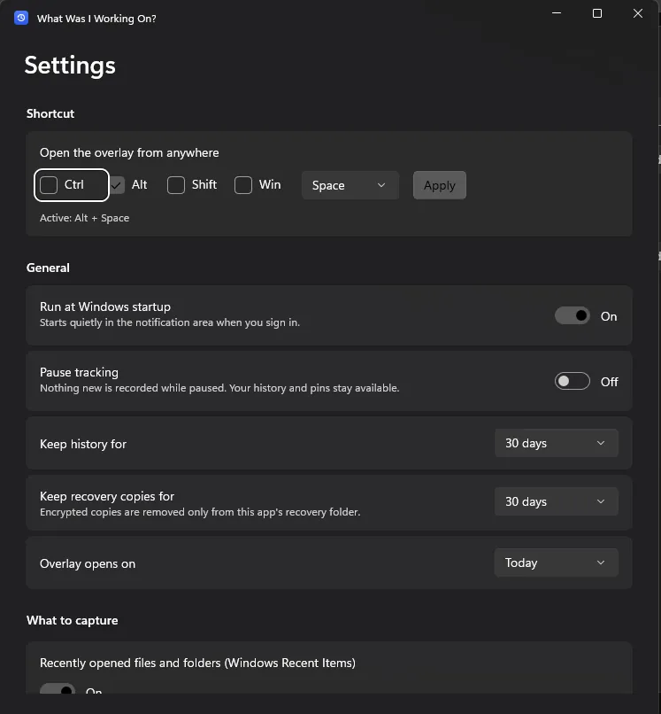

Windows app · Live
What Was I Working On?
Recent files and folders are collected into a searchable history. A quick overlay or a full timeline lets you reopen the right item, and the record never leaves your machine.
Who it is for: For anyone who loses track of what they were working on and needs to get back to it quickly.
What it does
- Opens a quick overlay of recent work from a shortcut
- Browses a full timeline: today, yesterday, past 7 days and past 30 days
- Filters by name, folder, app or file extension
- Reopens files and folders straight from the timeline
- Optional Windows 11 widget and reminders for supported apps
- Scans known app recovery folders, only when you start it
- Stores history and recovery copies encrypted
What it doesn't do
- Need an account, cloud service, telemetry or internet access
- Upload your history or document contents
Screenshots



